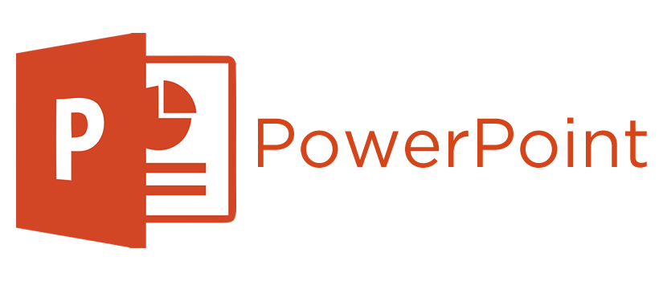

I'm Olabode Imisioluwa Cecilia, a skilled data analyst proficient in Excel, Power BI, SQL, Tableau, and PowerPoint presentation. With a fervent passion for transforming complex data into actionable insights, I specialize in leveraging these tools to drive informed decision-making.
In my role as a data analyst, I possess a unique blend of analytical thinking, curiosity, problem-solving skills, meticulous attention to detail, effective communication, adaptability, and ethical awareness. This comprehensive skill set enables me to deliver impactful insights through thorough data cleaning, insightful analysis, and compelling visualization.
I am particularly passionate about learning and continually seek opportunities to refine my skills and stay abreast of industry trends. This commitment to continuous improvement ensures that I remain at the forefront of data analytics, ready to tackle new challenges with innovative solutions.
Moreover, I enjoy collaborating with others, as it allows me to gain diverse perspectives and insights that enhance my analytical approach while also providing opportunities to positively impact others.
Motivated by a commitment to excellence, I am dedicated to delivering valuable contributions that empower organizations to make strategic decisions with confidence.


This project involves analyzing customer data for NexaSat, a leading telecom company, to maximize Customer Lifetime Value (CLV) through effective segmentation. The goal is to uncover valuable insights into customer behavior and develop strategies to enhance long-term value. Using SQL, I performed data analysis to identify distinct customer segments and calculate CLV. These insights were used to craft targeted strategies for upselling, cross-selling, and reducing churn.

This project entails cleaning and exploring datasets containing sales transactions, customer demographics, and product
categories for EcoLiving Essentials Mart. The goal is to uncover hidden trends and opportunities essential for informed
business decision-making. I used Excel for data cleaning, MySQL for analysis, and Power BI for visualizing insights.

In this project, I conducted a data exploratory analysis of the Art Museum Dataset using MySQL, to gain insights into various
aspects of the art world, including the characteristics of paintings, the popularity of artists, trends in museum
displays, and more.
This project analyzed survey data from Malaysia to identify common skin problems and evaluate the suitability of an AI Face Scanner for quick skin issue tracking and personalized routines. The survey aimed to understand Malaysians' skin issues, factors influencing skincare purchases, and their willingness to use AI for skincare. Data cleaning and analysis were performed using Excel and MySQL, with results visualized in PowerBi.

From meticulous cleaning to compelling visualizations, witness how I used excel to transform raw data into actionable insights.

This encompasses several interactive Tableau dashboards that visualize comprehensive insights.
From data cleaning with Power Query to analysis and visualizations with the help of DAX functions, I created various interactive reports in Power BI.

This involves cleaning and transforming data efficiently using Power Query, ensuring accuracy and consistency for analysis and reporting.

This features some of my PowerPoint presentations in PDF formats.